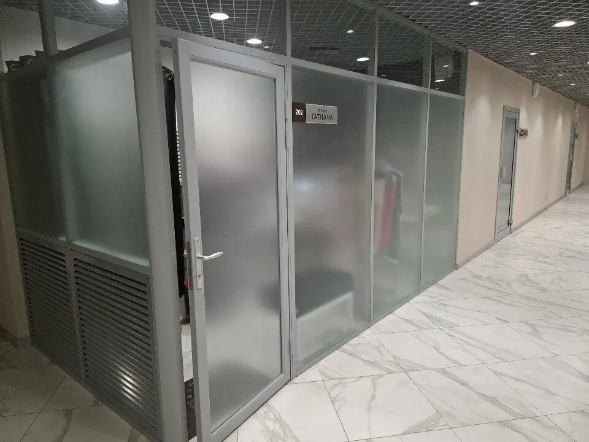
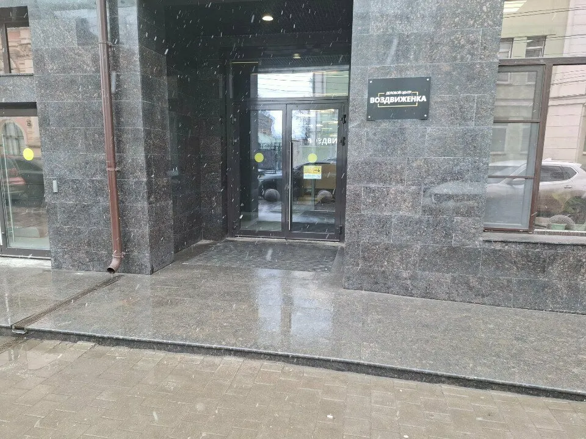
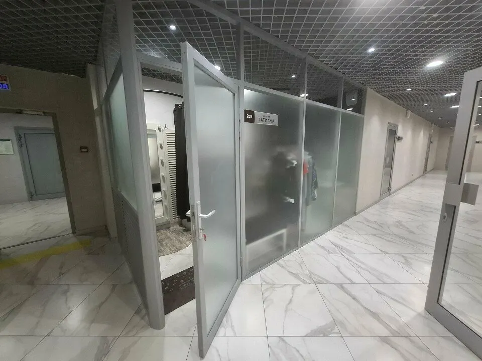
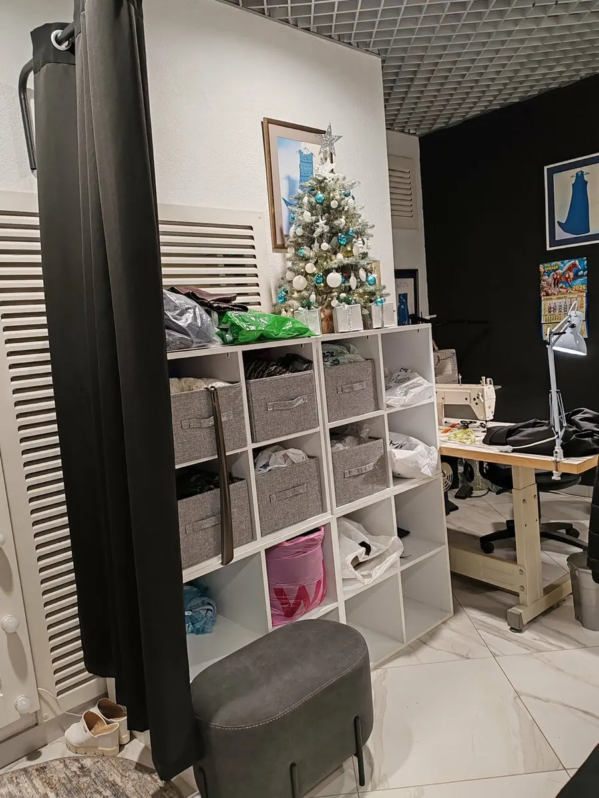

Ателье · подшив, ремонт и пошив одежды
Ремонт и подшив одежды в Туле - быстро и аккуратно
Брюки, джинсы, платья, свадебные юбки. Клиенты пишут в отзывах: мастер всё посоветует, а подшив делают за пару часов.
- Пн-Сб 12:00-18:00, воскресенье выходной
- 2 этаж БЦ «Воздвиженка», дверь 202
- Вход доступен на инвалидной коляске

Что делаем и сколько стоит
Подшить
- Брюки, джинсыпо отзывам клиентов: от получаса до пары часовуточнить
- Платье, в том числе на выпускнойуточнить
- Свадебная юбкауточнить
Другой ремонт
- Ушить, зашить, перешить вещьуточнить
Как к нам попасть
- 01
Вход в БЦ «Воздвиженка»
ул. Революции, 1. Вход доступен на инвалидной коляске.
- 02
Второй этаж
Ателье находится на втором этаже бизнес-центра.
- 03
Дверь 202
На двери табличка «Татиана».
- 04
Покажите вещь мастеру
Мастер учтёт ваши пожелания и посоветует, что лучше сделать.



Что пишут клиенты
Быстро
«За пару часов», «примерно за полчаса» - так клиенты описывают подшив брюк и джинсов.
Аккуратно
Ровные строчки, обработанные края, никаких торчащих ниток - из отзыва на подшив свадебной юбки.
С учётом ткани и фасона
Мастер учитывает нюансы ткани и покроя, результат такой, как хотелось.
Точно в срок
Платье на выпускной подшили вовремя - из отзыва клиентки.
Отзывы с Яндекс.Карт
«Возникла срочная необходимость укоротить джинсы. Сделали за пару часов! Вежливый мастер, всё отлично! Ателье находится на втором этаже бизнес центра.»
Павел О. · 6 января
«Обратилась с запросом подшить брюки, работу выполнили примерно за полчаса! Замечательная мастерица, настоящий профессионал. Качество на высоте.»
Ксения Кудашева · 29 сентября
«Огромное спасибо этому ателье! Подшивали здесь платье на выпускной, и результат превзошёл все ожидания. Очень добрая, отзывчивая и внимательная женщина, которая сразу понимает, что нужно сделать. Работа выполнена аккуратно, качественно и точно в срок»
Кристина Шавырина · 30 июня
Отзывы с карточки на Яндекс.Картах, без правок.
Частые вопросы
Где вас найти?
Тула, ул. Революции, 1, бизнес-центр «Воздвиженка», 2 этаж, дверь 202 с табличкой «Татиана».
Когда вы работаете?
С понедельника по субботу с 12:00 до 18:00, воскресенье выходной.
Можно ли попасть на инвалидной коляске?
На карточке Яндекс Карт вход отмечен как доступный.
Как узнать стоимость?
Позвоните по телефону +7 (906) 539-80-77 в часы работы.
Позвоните или заходите: 2 этаж, дверь 202
- Адрес
- ул. Революции, 1, БЦ «Воздвиженка», 2 этаж, дверь 202, Тула
- Часы
- Пн-Сб 12:00-18:00, воскресенье выходной
- Телефон
- +7 (906) 539-80-77